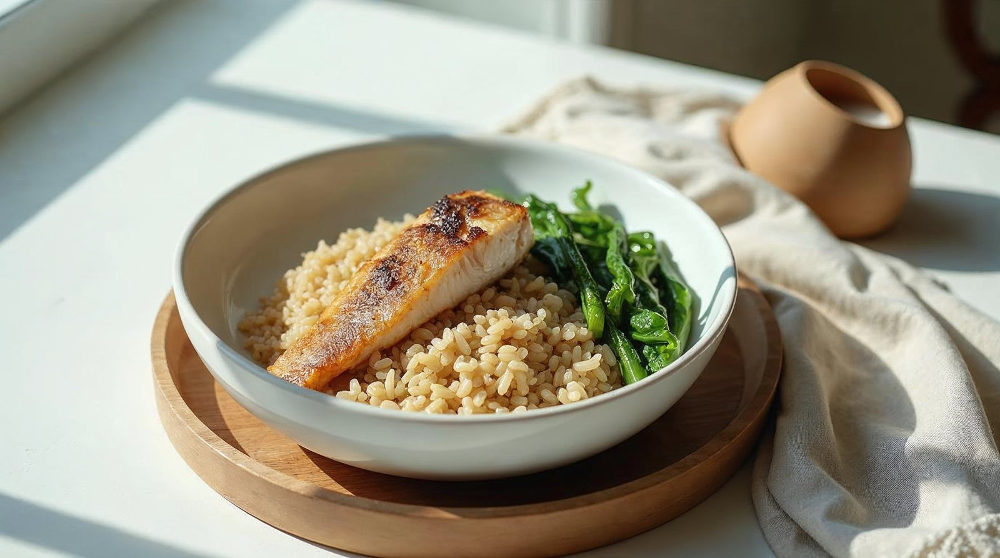
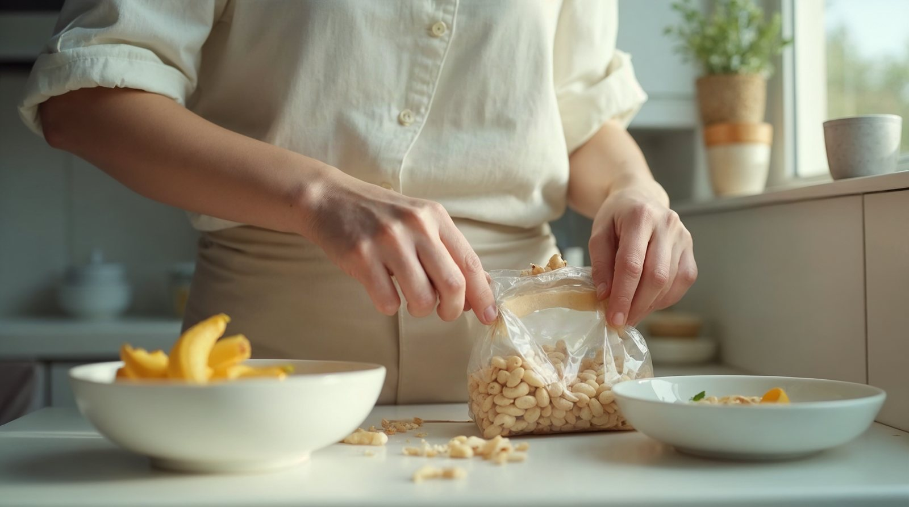
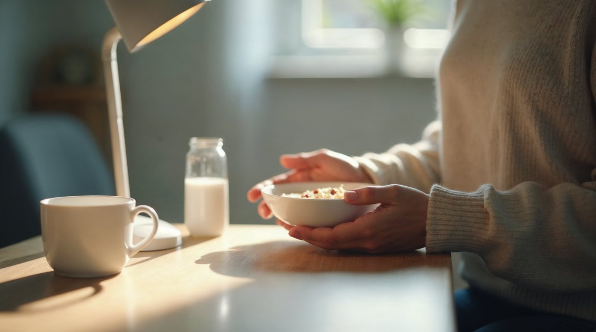

이종호 한의사 감수좋은꿈참사랑한의원 대표원장 (한의사 면허번호 19769)발행 2026-11-24 · 수정 2026-11-26
이 글의 차례
- 왜 이런 불편이 생길 수 있나요
- 자라서 느는 식욕과 살펴봐야 할 식욕은 어떻게 다를까요?
- 왜 학원 다녀온 밤에 유독 라면이 당길까요?
- 먼저 이렇게 여쭙니다
- 일상에서 먼저 해 볼 수 있는 것
- 학원 가는 날 식사와 간식, 이렇게 나눠 볼 수 있습니다
- 든든한 간식, 무엇을 준비하면 좋을까요?
- 운동하는 아이는 언제 먹으면 좋을까요?
- 아이와 먹는 이야기를 할 때 조심할 점
- 잠과 식욕은 어떻게 이어져 있나요?
- 주말과 방학에는 어떻게 할까요?
- 상황별 예시
- 스스로 점검해 보세요
- 한의원에서 함께 살필 수 있는 경우
- 첫 방문에서는 이렇게 진행합니다
- 얼마나 지켜보고 언제 상담할까요
- 이렇게 기록해 오시면 상담이 쉬워집니다
- 이런 증상은 먼저 확인이 필요합니다
- 함께 읽으면 좋은 글
자라는 시기에는 먹는 양이 크게 늘 수 있어, 양을 줄이기보다 먹는 시각과 구성을 다듬는 것부터 살피는 것이 좋습니다. 중학생이 된 뒤 밥을 두 공기씩 먹고도 금방 배고프다는 아이, 학원 다녀와서 밤에 라면을 끓여 먹는 아이 때문에 걱정하시는 부모님이 계십니다.
많이 먹는 것 자체보다 언제, 무엇을, 어떤 순서로 먹는지가 아이의 잠과 소화, 체중 흐름에 더 큰 영향을 주는 경우가 많습니다. 상도동이나 흑석동, 노량진 쪽 학원을 오가는 아이들은 저녁이 늦어지기 쉬워, 저는 보호자분께 하루 시간표부터 함께 펼쳐 보자고 말씀드립니다.
왜 이런 불편이 생길 수 있나요
- 키가 빨리 자라는 시기에는 몸에 필요한 에너지가 늘어 식욕이 커지는 경우가 많습니다.
- 학원 일정으로 저녁이 늦어지면 오후 허기가 커져 밤에 몰아 먹게 되기 쉽습니다.
- 단 음료와 과자처럼 금방 소화되는 간식은 곧 다시 배고프게 만들기도 합니다.
- 잠이 부족하거나 스트레스가 클 때 먹는 양이 늘어나는 아이도 있습니다.
- 운동부 활동이나 체육 수업이 많은 시기에는 몸이 쓰는 양만큼 배고픔도 커집니다.
- 급하게 먹으면 배부른 느낌이 늦게 와서, 먹고 나서도 금방 또 먹을 것을 찾기도 합니다.
자라서 느는 식욕과 살펴봐야 할 식욕은 어떻게 다를까요?
키가 쑥쑥 자라는 시기의 식욕은 대개 키와 몸무게가 함께 늘고, 기운도 좋고 잠도 잘 자는 모습과 함께 옵니다. 이런 경우라면 양을 억지로 줄이기보다 끼니와 간식의 시각, 구성을 다듬는 것만으로 충분한 때가 많습니다.
반면 키는 그대로인데 몸무게만 빠르게 늘거나, 많이 먹는데도 오히려 살이 빠진다면 다른 이유가 숨어 있지 않은지 살펴봐야 합니다. 물을 유난히 많이 마시고 소변이 잦은 경우도 마찬가지입니다.
- 최근 6개월 동안 키도 함께 자랐는가
- 많이 먹은 뒤에도 기운이 있고 잠을 잘 자는가
- 시험이나 다툼처럼 마음이 힘든 시기에만 유독 먹는 양이 늘지는 않는가
- 먹는 것을 숨기거나 먹고 나서 지나치게 후회하지는 않는가
뒤의 두 가지에 해당한다면 배고픔보다 마음이 힘들다는 신호일 수 있어, 먹는 이야기와 함께 마음 상태도 천천히 여쭙습니다.
왜 학원 다녀온 밤에 유독 라면이 당길까요?
하교 뒤 바로 학원에 가서 밤 9시나 10시에 돌아오면, 점심 이후 여덟 시간 가까이 제대로 먹지 못한 셈이 됩니다. 이렇게 허기가 커진 상태에서는 빠르게 배를 채울 수 있는 짜고 따뜻한 음식이 가장 먼저 떠오르기 쉽습니다.
공부로 머리를 오래 쓴 뒤라 긴장을 풀고 싶은 마음도 함께 작용합니다. 그래서 밤 라면을 줄이려면 밤에 참는 것보다 학원 가기 전 오후에 든든하게 먹어 두는 것이 먼저입니다.
밤늦게 많이 먹고 자면 잠이 얕아지고 아침 입맛이 없어 아침을 거르기 쉽습니다. 아침을 거르면 점심 전부터 배가 고파 간식이 늘어나는 흐름이 이어지기도 합니다.

먼저 이렇게 여쭙니다
- 하루에 몇 끼를 먹고, 간식은 언제 무엇을 먹나요?
- 학원 다녀와서 밤늦게 먹는 날이 일주일에 며칠인가요?
- 최근 몇 달 사이 키와 몸무게가 어떻게 변했나요?
- 물을 유난히 많이 마시거나 소변을 자주 보지는 않나요?
- 운동부나 체육 활동은 일주일에 얼마나 하나요?
- 아침밥은 먹고 등교하나요?
- 먹는 속도는 어떤가요? 한 끼를 몇 분 만에 먹나요?

일상에서 먼저 해 볼 수 있는 것
- 학원 가기 전에 주먹밥이나 달걀처럼 든든한 간식 챙겨 주기
- 밤에는 라면 대신 우유, 과일, 고구마처럼 가벼운 것 준비해 두기
- 식사 때 밥과 함께 단백질 반찬과 채소를 고르게 담기
- 단 음료와 과자는 집에 쌓아 두지 않기
- 식사는 15분 이상 천천히, 가능하면 가족과 함께 앉아서 먹기
- 아침밥을 가볍게라도 챙겨 오전 허기 줄이기
- 밤 간식은 잠들기 2시간 전까지 마치기
학원 가는 날 식사와 간식, 이렇게 나눠 볼 수 있습니다
- 아침 7시: 밥이나 빵에 달걀, 우유를 곁들인 가벼운 아침
- 점심 12시: 학교 급식을 충분히
- 오후 4~5시: 학원 가기 전 주먹밥이나 김밥, 삶은 달걀 같은 든든한 간식
- 밤 9~10시: 귀가 후 우유, 과일, 고구마처럼 가벼운 것
- 잠들기 2시간 전: 먹는 것은 마무리하고 물 정도만
이렇게 나누면 하루에 먹는 양은 비슷해도 밤에 몰아 먹는 일이 줄어듭니다. 학원 일정이 요일마다 다르다면 가장 늦게 끝나는 날을 기준으로 먼저 맞춰 보세요.
든든한 간식, 무엇을 준비하면 좋을까요?
- 주먹밥이나 김밥 한 줄처럼 밥이 들어간 것
- 삶은 달걀, 치즈, 두유처럼 단백질이 있는 것
- 고구마, 감자, 옥수수처럼 천천히 소화되는 것
- 바나나, 사과처럼 들고 다니기 쉬운 과일
과자나 빵, 단 음료는 금방 배가 꺼져 학원 수업 중간에 다시 허기가 몰려오기 쉽습니다. 가방에 넣기 쉬운 것으로 두세 가지를 정해 두면 아이도 스스로 챙기기가 수월합니다.
운동하는 아이는 언제 먹으면 좋을까요?
운동부 활동이나 태권도, 축구처럼 몸을 많이 쓰는 아이는 운동 1~2시간 전에 가벼운 간식을 먹고, 운동 뒤에는 늦지 않게 식사를 하는 것이 좋습니다. 운동 직후 허기가 클 때 편의점에서 단 음료와 과자로 채우지 않도록 미리 챙겨 주세요.
운동량이 많은 날과 적은 날의 식사량이 다른 것은 자연스러운 일입니다. 운동 시간과 먹은 시각을 함께 적어 오시면 아이에게 맞는 식사 순서를 정하기가 수월합니다.
아이와 먹는 이야기를 할 때 조심할 점
사춘기 아이는 몸의 변화에 예민한 시기라 "너무 많이 먹는다", "살쪘다" 같은 말을 크게 받아들이기 쉽습니다. 이런 말이 쌓이면 몰래 먹거나, 반대로 지나치게 굶으려는 아이도 있습니다.
먹는 양을 지적하기보다 "학원 가기 전에 뭐 챙겨 줄까?"처럼 시각과 메뉴를 함께 고르는 대화로 바꿔 보세요. 아이가 스스로 고른 간식은 더 잘 지키는 경우가 많습니다.
보호자가 함께 같은 시각에 식사하는 모습을 보여 주는 것도 도움이 됩니다. 집에서 단 음료를 줄이려면 아이만이 아니라 가족 모두가 함께 바꾸는 것이 자연스럽습니다.
잠과 식욕은 어떻게 이어져 있나요?
잠이 부족한 날에는 배고픔을 느끼게 하는 신호가 커지고, 배부름을 느끼는 신호는 약해진다는 연구가 알려져 있습니다. 시험 기간이나 학원 숙제로 늦게 자는 날이 이어지면 아이가 평소보다 더 자주 먹을 것을 찾는 것도 이 때문일 수 있습니다.
그래서 식욕을 이야기할 때 저는 잠드는 시각과 일어나는 시각을 꼭 함께 여쭙니다. 밤 간식을 줄이고 조금 일찍 잠자리에 드는 것만으로도 다음 날 낮의 허기가 덜하다는 아이가 많습니다.
휴대폰을 보다가 늦게 잠드는 아이라면 잠자리에 들기 30분 전에는 휴대폰을 거실에 두고 들어가기로 가족이 함께 약속해 보세요. 잠이 정리되면 먹는 리듬도 함께 정리되는 경우가 많습니다.
주말과 방학에는 어떻게 할까요?
주말이나 방학에는 늦잠을 자고 첫 끼가 점심으로 밀리면서, 오후 내내 간식을 조금씩 먹다가 저녁에 또 많이 먹는 흐름이 생기기 쉽습니다.
평일보다 1시간 정도 늦은 시각까지만 늦잠을 허용하고, 일어나면 가볍게라도 아침을 먹게 해 보세요. 오후에는 간식 시각을 한 번 정해 두고, 그 외에는 물이나 과일 정도로 지내는 것이 좋습니다.
상황별 예시
- 예를 들어 중학생 아이가 하교 후 바로 학원에 가서 밤 10시에 돌아와 라면 두 개를 끓여 먹고 자정 넘어 잠드는 경우에는 학원 가기 전 오후 5시 무렵 김밥이나 주먹밥을 먹게 하고, 귀가 후에는 우유와 과일로 마무리하는 순서를 함께 정합니다.
- 예를 들어 축구부 활동을 하는 아이가 훈련이 끝나면 편의점에서 빵과 탄산음료를 사 먹고 저녁을 또 많이 먹는 경우에는 훈련 전 간식을 집에서 챙겨 주고, 훈련 뒤에는 바로 저녁 식사로 이어지도록 시각을 맞추는 방법을 이야기합니다.
- 예를 들어 시험 기간이 되면 밤마다 과자를 먹으며 공부하는 아이라면 배고픔인지 긴장을 푸는 습관인지 함께 나눠 보고, 공부 중에는 물이나 따뜻한 차를 곁에 두는 것부터 해 봅니다.
- 예를 들어 맞벌이 가정에서 아이가 하교 후 혼자 집에 있으며 냉장고와 찬장의 과자를 조금씩 꺼내 먹다가 저녁을 거의 못 먹는 경우에는 하교 후 먹을 간식을 미리 한 접시에 담아 두고, 과자는 집에 쌓아 두지 않는 방법을 보호자와 함께 정합니다.
- 예를 들어 밥은 두 공기씩 먹는데 반찬은 거의 먹지 않는 아이라면 양을 줄이기보다 단백질 반찬을 먼저 한 접시 먹고 밥을 먹는 순서로 바꿔 보는 것을 이야기합니다.
스스로 점검해 보세요
- 밤 9시 이후에 라면이나 과자를 먹는 날이 일주일에 사흘 이상이다
- 학원 가기 전에 먹는 간식이 없거나 과자·빵뿐이다
- 아침을 거르고 등교하는 날이 많다
- 단 음료를 하루 한 병 이상 마신다
- 한 끼를 10분 안에 다 먹는다
- 최근 몇 달 사이 키보다 몸무게가 훨씬 빠르게 늘었다
- 시험이나 다툼이 있을 때 먹는 양이 눈에 띄게 늘어난다
해당하는 항목이 많다면 먹는 양보다 학원 전 간식과 밤 간식의 시각부터 하나씩 바꿔 보세요.

한의원에서 함께 살필 수 있는 경우
- 식욕이 늘면서 체중이 빠르게 늘어난 경우 식사 리듬과 잠, 활동량을 함께 살핍니다.
- 많이 먹는데도 쉽게 지치고 기운이 없는 경우 잠과 생활 리듬을 함께 살핍니다.
- 스트레스를 받을 때 먹는 양이 크게 느는 경우 기분과 생활 리듬을 함께 여쭙니다.
좋은꿈참사랑한의원에서는 아이도 보호자와 함께한 자리에서 맥을 짚으며 이야기를 듣습니다. 아이가 편하게 말할 때까지 기다리고, 보호자가 지켜본 변화도 함께 여쭙습니다. 필요하다고 판단될 때는 설진을 더해 살핍니다. 생활에서 바꿀 순서와 아이에게 맞는 방법을 보호자와 함께 정하며, 다른 검사가 필요하면 먼저 안내합니다.
첫 방문에서는 이렇게 진행합니다
처음 오시면 아이의 평일 하루를 아침부터 잠들 때까지 순서대로 들려 달라고 부탁드립니다. 학교, 학원, 운동, 식사와 간식, 잠드는 시각을 나란히 놓으면 어느 시간대에 허기가 몰리는지 보입니다.
맥을 짚으며 아이에게 소화와 화장실, 잠과 기분에 대해 쉬운 말로 여쭙습니다. 사춘기 아이는 보호자 앞에서 말하기 어려워하는 경우도 있어, 아이가 편하게 이야기할 수 있도록 천천히 기다립니다.
이야기를 마치면 학원 전 간식과 밤 간식처럼 바꿔 볼 한두 가지를 보호자, 아이와 함께 정합니다. 체중 변화가 크거나 다른 검사가 필요해 보이면 소아청소년과 확인을 먼저 권해 드립니다.
얼마나 지켜보고 언제 상담할까요
- 학원 전 간식과 밤 간식의 시각을 바꾸고 2~3주 동안 식사 시각과 잠, 아침 입맛을 적어 보세요.
- 바꿔 본 뒤에도 밤에 몰아 먹는 날이 계속되거나, 키보다 체중이 빠르게 늘어나는 흐름이 두세 달 이어지면 상담을 받아 보시기를 권합니다.
- 먹는 것을 숨기거나 먹은 뒤 지나치게 괴로워하는 모습이 보인다면 기간과 상관없이 일찍 이야기를 나눠 보세요.
이렇게 기록해 오시면 상담이 쉬워집니다
- 하루 식사와 간식 시각, 메뉴(사흘 정도)
- 최근 몇 달의 키와 몸무게 변화
- 물 마시는 양과 소변 횟수
- 잠드는 시각과 학원 일정
- 운동한 날과 운동 시간
- 시험이나 다툼처럼 마음이 힘들었던 날과 그날 먹은 양
이런 증상은 먼저 확인이 필요합니다
- 많이 먹는데도 체중이 줄거나, 물을 유난히 많이 마시고 소변이 잦은 경우
- 먹고 나서 일부러 토하거나 체중에 대한 걱정이 지나친 경우
이런 신호가 있으면 한의원보다 가까운 병원이나 응급실을 먼저 찾으세요.
함께 읽으면 좋은 글
- 아이가 살이 많이 쪘다는 말을 들었을 때(소아 비만), 부모는 무엇부터 살피나요?
- 아이의 사춘기가 너무 빨리 오는 것 같을 때(성조숙증 걱정), 부모는 무엇을 먼저 확인하나요?
- 중고등학생 아이가 아침을 거르고 등교할 때는 어떻게 살피나요?

여쭙는 것
- 하루에 몇 끼를 먹고, 간식은 언제 무엇을 먹나요?
- 학원 다녀와서 밤늦게 먹는 날이 일주일에 며칠인가요?
- 최근 몇 달 사이 키와 몸무게가 어떻게 변했나요?
생활에서 해 볼 것
- 학원 가기 전에 주먹밥이나 달걀처럼 든든한 간식 챙겨 주기
- 밤에는 라면 대신 우유, 과일, 고구마처럼 가벼운 것 준비해 두기
- 식사 때 밥과 함께 단백질 반찬과 채소를 고르게 담기
한의원에서 함께 살필 것
- 식욕이 늘면서 체중이 빠르게 늘어난 경우 식사 리듬과 잠, 활동량을 함께 살핍니다.
- 많이 먹는데도 쉽게 지치고 기운이 없는 경우 잠과 생활 리듬을 함께 살핍니다.
- 스트레스를 받을 때 먹는 양이 크게 느는 경우 기분과 생활 리듬을 함께 여쭙니다.
먼저 확인이 필요한 신호
- 많이 먹는데도 체중이 줄거나, 물을 유난히 많이 마시고 소변이 잦은 경우
- 먹고 나서 일부러 토하거나 체중에 대한 걱정이 지나친 경우
한눈에 보는 표
| 구분 | 핵심 |
|---|---|
| 여쭙는 것 | 하루에 몇 끼를 먹고, 간식은 언제 무엇을 먹나요? 학원 다녀와서 밤늦게 먹는 날이 일주일에 며칠인가요? |
| 생활에서 해 볼 것 | 학원 가기 전에 주먹밥이나 달걀처럼 든든한 간식 챙겨 주기 밤에는 라면 대신 우유, 과일, 고구마처럼 가벼운 것 준비해 두기 |
| 한의원에서 함께 살필 것 | 식욕이 늘면서 체중이 빠르게 늘어난 경우 식사 리듬과 잠, 활동량을 함께 살핍니다. 많이 먹는데도 쉽게 지치고 기운이 없는 경우 잠과 생활 리듬을 함께 살핍니다. |
| 먼저 확인이 필요한 신호 | 많이 먹는데도 체중이 줄거나, 물을 유난히 많이 마시고 소변이 잦은 경우 먹고 나서 일부러 토하거나 체중에 대한 걱정이 지나친 경우 |
자주 묻는 질문
성장기에는 많이 먹어도 괜찮은 것 아닌가요?
자라는 시기에는 먹는 양이 늘 수 있습니다. 다만 늦은 시각에 몰아 먹거나 단 음식 위주라면 잠과 소화에 영향을 줄 수 있어 먹는 시각과 구성을 함께 살펴봅니다.
아이와 함께 와야 하나요?
아이의 이야기를 직접 듣는 것이 중요해 함께 오시기를 권합니다. 미성년 자녀는 보호자와 함께 오시면 진료 안내가 수월합니다.
운동을 많이 하는 아이도 같은가요?
운동량이 많은 아이는 더 많이 먹는 것이 자연스러울 수 있습니다. 운동 시간과 식사 시각을 함께 적어 오시면 아이에게 맞는 식사 순서를 함께 정리합니다.
진료 시간은 어떻게 되나요?
좋은꿈참사랑한의원은 평일 09:30~20:00(점심 13:00~14:00), 토·일·공휴일 09:30~15:00에 진료합니다.
좋은꿈참사랑한의원은 재진 때 지난번 이야기부터 이어서 여쭙니다. 진료시간과 예약은 오시는 길에서 확인하세요.
어디서 상담받을 수 있나요?
좋은꿈참사랑한의원은 서울 동작구 만양로2길 2 신성빌딩 3층·5층(서울 동작구 상도동, 7호선 상도역 3번 출구 근처)에 있습니다. 한의사 3명(이종호 대표원장, 조영기 수석진료원장, 정원영 진료원장)이 진료합니다. 진료시간은 평일 09:30~20:00(점심 13:00~14:00), 토·일·공휴일 09:30~15:00이며, 방문 전 전화로 확인을 권합니다. 예약은 네이버 예약, 카카오톡 상담, 전화 02-815-7510로 받습니다.
이 글은 일반적인 건강 정보이며 개인의 진단이나 치료를 대신하지 않습니다. 증상이 있거나 복용 중인 약이 있다면 진료를 통해 확인하세요. 치료 효과는 개인마다 다를 수 있습니다.
작성 기준: 일반적으로 알려져 있는 건강 정보를 참고해 정리했습니다(대표원장 감수). 증상 기록은 1~2주 동안 하루 1회, 비슷한 시간에 적어 오시면 지난 상태와 비교하기 쉽습니다.